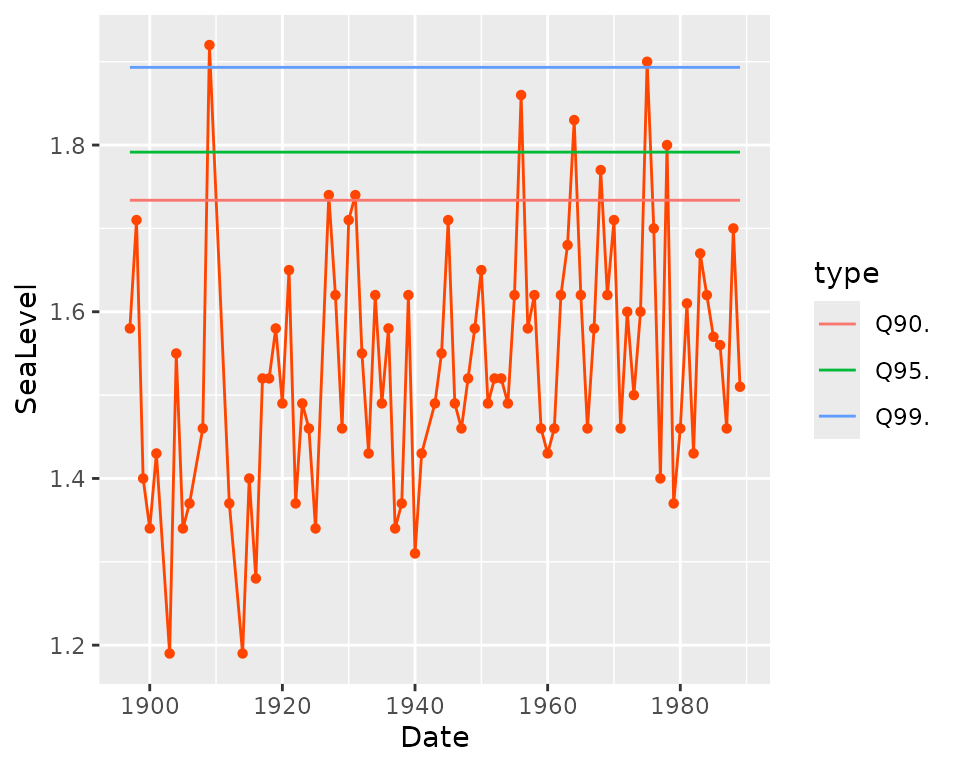
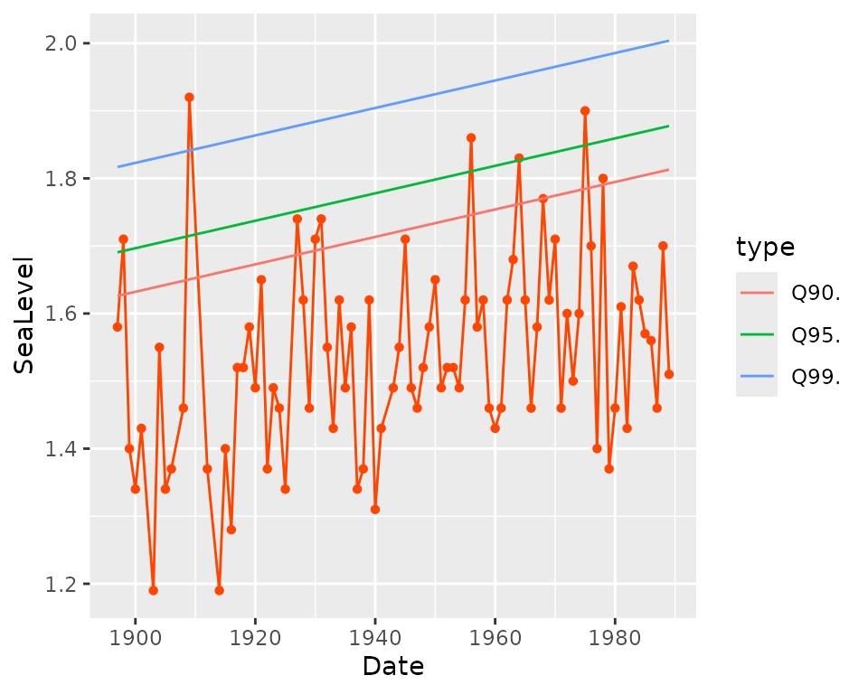
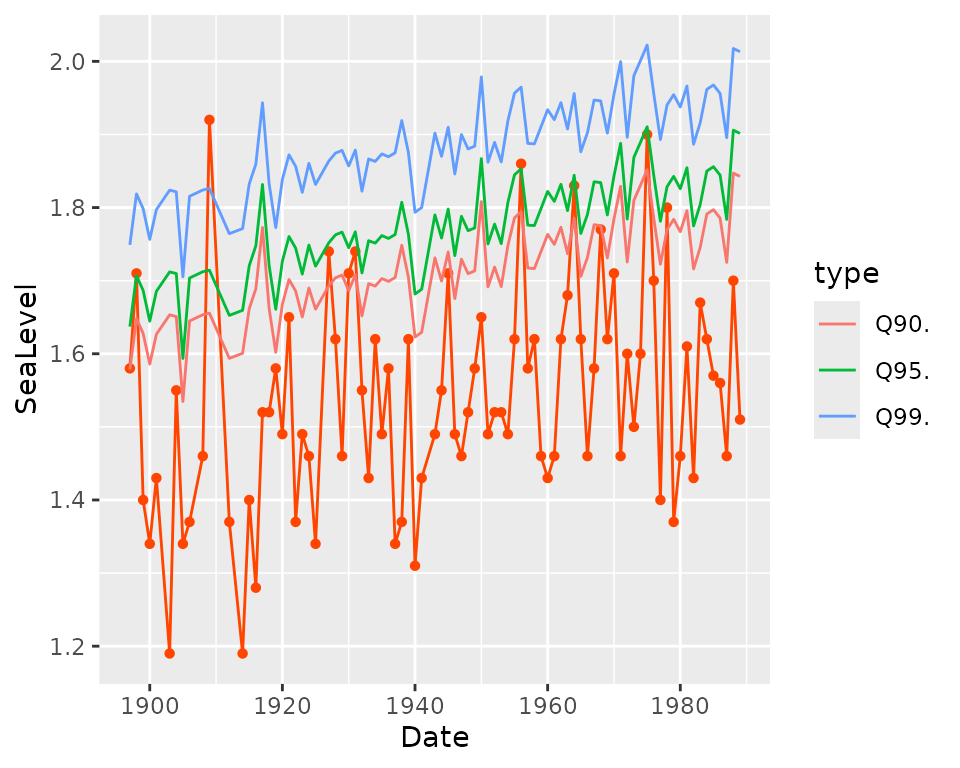
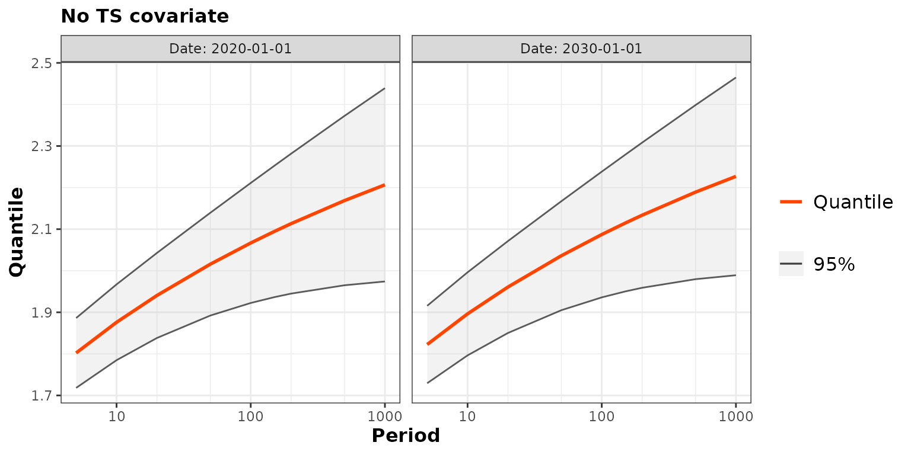
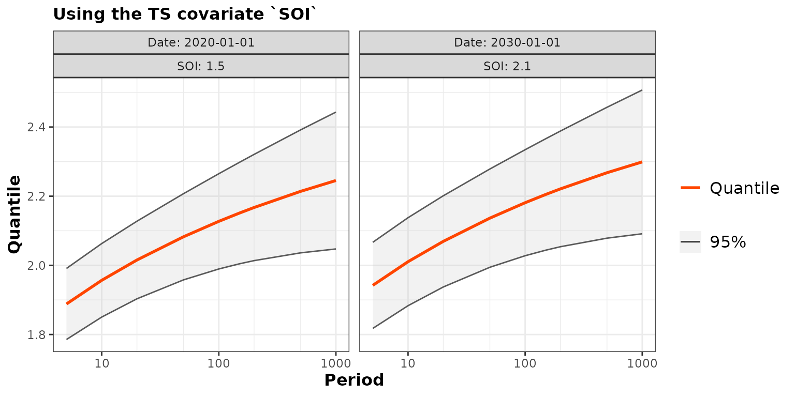
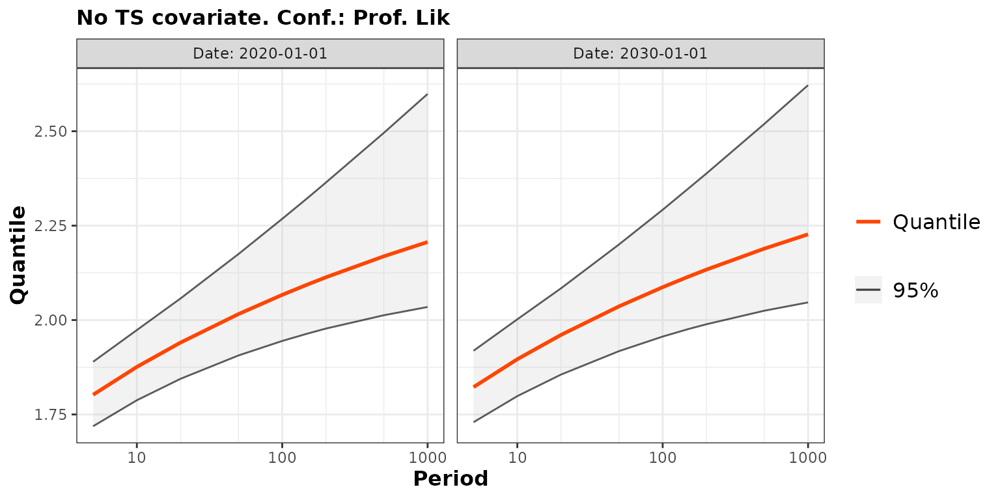
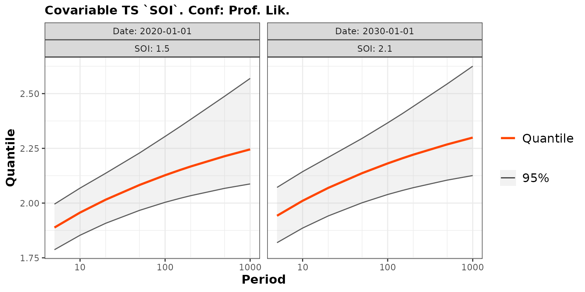

Using timeseries covariates in TVGEV models
In Time-Varying GEV models, a series of block maxima is considered as formed by independent GEV observations with their marginal distribution depending on the time . In some cases one may want to further use one or several timeseries covariate . A typical example of such timeseries covariates is provided by so-called climate indices such as the Southern Oscillation Index (SOI) and the North Atlantic Oscillation (NAO) both available from the USA National Oceanic and Atmospheric Administration. The response usually being a timeseries of annual maxima, each covariate must also come with a yearly sampling, which may require some kind of aggregation using the annual mean or maximum. Most often, timeseries covariates should be used along with functions of time describing the trend, in order to avoid spurious regression, see below. Note that a covariate does not need to have independent observations nor even to be stationary. The crucial assumption in the model is that the observations are independent conditional on the series .
Example: Annual Sea Levels in Fremantle (AUS)
The fremantle data of the ismev package
contains the annual maxima of the sea level in Fremantle, Australia, in
meters. This dataset is described in Chap. 1 of Coles (2001) and is used in Chap. 6 of the book
to provide examples of models for non-stationary extremes.
## Year SeaLevel SOI
## 1 1897 1.58 -0.67
## 2 1898 1.71 0.57
## 3 1899 1.40 0.16
## 4 1900 1.34 -0.65
## 5 1901 1.43 0.06
## 7 1903 1.19 0.47
## 8 1904 1.55 0.39The SOI column contains the annual value of the Southern
Oscillation Index. In order to use the TVGEV function with
this data it helps to define a variable of class "Date" by
using the Year column.
The variable SeaLevel contains the response timeseries
while
will be used as covariate
.
The series are shown below, along with a scatterplot with points
.
Note that some years are missing such as 1902. This will not affect the
use of the TVGEV function. Moreover, the same results would
be obtained if the missing years were added to the table with
NA values for the two variables SeaLevel and
SOI. This will be illustrated later
library(plotly);
g1 <- ggplot(data = df) +
geom_segment(aes(x = Date, xend = Date, y = min(SeaLevel) - 0.1, yend = SeaLevel), colour = "orangered") +
geom_point(aes(x = Date, y = SeaLevel), colour = "orangered") + xlab("") + ylab("SeaLevel (m)")
g2 <- ggplot(data = df) +
geom_segment(aes(x = Date, xend = Date, y = 0, yend = SOI), colour = "SeaGreen") +
geom_point(aes(x = Date, y = SOI), colour = "SeaGreen") + xlab("") + ylab("SOI")
g3 <- ggplot(data = df) +
geom_point(aes(x = SOI, y = SeaLevel, date = Date)) + xlab("SOI") + ylab("SeaLevel") One may guess from the scatterplot that a larger level of the
SOI results on average in a (slightly) larger sea
level.
TVGEV models with timeseries covariates
Fitting the TVGEV models
Using the fremantle data, we fit the following three GEV
models
involving a parameter vector
So is a stationary model with i.i.d. GEV observations, specifies a linear time trend for the location parameter and uses both a linear time trend term and a linear effect of the covariate . In all cases, the GEV scale and the shape are both kept constant. The three models are nested.
The linear time trend will be built by using the
polynomX design function which returns a matrix of
polynomials in
.
The column t1 can be used to describe the trend. The
(default) time origin is located at 1970-01-01 and the time
is expressed in years.
fit0 <- TVGEV(data = df, response = "SeaLevel", date = "Date",
design = polynomX(date = Date, degree = 1),
loc = ~ 1)
fit1 <- TVGEV(data = df, response = "SeaLevel", date = "Date",
design = polynomX(date = Date, degree = 1),
loc = ~ t1)
fit2 <- TVGEV(data = df, response = "SeaLevel", date = "Date",
design = polynomX(date = Date, degree = 1),
loc = ~ t1 + SOI)
autoplot(fit0)
autoplot(fit1)
autoplot(fit2)## Warning in quantile.TVGEV(object): 'x' includes TSVars
The autoplot method builds a ggplot object
showing the observed response against the date along with the fitted
quantiles for three levels of the probability of non-exceedance
,
namely
,
and
.
These quantiles are those of the
distribution. When a timeseries covariate is used as for the object
fit2, the quantiles are conditional on the value of the
covariate for the corresponding year.
The methods coef, summary can be used to
extract the vector
of estimated coefficients or get to a summary.
coef(fit2)## mu_0 mu_t1 mu_SOI sigma_0 xi_0
## 1.538642271 0.002113693 0.054532375 0.120730769 -0.150056860
summary(fit2)## Call:
## TVGEV(data = df, date = "Date", response = "SeaLevel", design = polynomX(date = Date,
## degree = 1), loc = ~t1 + SOI)
##
## Coefficients:
## Estimate Std. Error
## mu_0 1.538642271 0.0184556202
## mu_t1 0.002113693 0.0005189511
## mu_SOI 0.054532375 0.0196335168
## sigma_0 0.120730769 0.0101280359
## xi_0 -0.150056860 0.0666351631
##
## Negative log-likelihood:
## -53.899The output of summary suggests that the coefficient of
is significantly different from zero because in the row with label
mu_SOI, the absolute value of the estimate
is larger than twice the corresponding standard error. The trend
coefficient mu_t1 is in meter by year so its value is 21.14
when expressed in centimeter by century, maybe a more suitable
unit.
Note that the estimated GEV shape parameter in fit2 is
fairly negative implying a finite upper end-point for the marginal GEV
distributions.
Generalised residuals
The resid method of the "TVGEV" class
computes the generalised residuals:
gr <- list()
gr[["0"]] <- autoplot(resid(fit0)) + ggtitle("fit0")
gr[["1"]] <- autoplot(resid(fit1)) + ggtitle("fit1")
gr[["2"]] <- autoplot(resid(fit2)) + ggtitle("fit2")When a generalised residual falls far away in one of the two tails of the Gumbel distribution, it may be a good idea to check the influence of the corresponding observation on the fit.
When the variable SOI is used, the two years
1903 and 1914 have different residuals
although they correspond to the same value of the sea level, because
they correspond to different values of SOI. Although they
correspond to severe coastal floodings, the largest sea levels in the
dataset correspond to somewhat “normal” values of the residuals. This
may mean that coastal flood defenses will have to be constantly
improved.
Comparing nested models with likelihood-ratio tests
The anova method can be used to compare two nested
models with Likelihood-Ratio test, for instance
and
.
anova(fit0, fit1)## Analysis of Deviance Table
##
## df deviance W Pr(>W)
## fit0 3 -87.133
## fit1 4 -99.826 12.692 0.0003671 ***
## ---
## Signif. codes: 0 '***' 0.001 '**' 0.01 '*' 0.05 '.' 0.1 ' ' 1So the likelihood-ratio test indicates that the linear trend term is strongly significant. Up to rounding, the maximised log-likelihoods are equal to those reported p. 113 in Coles (2001) book. We can similarly compare the two fitted models and
anova(fit1, fit2)## Analysis of Deviance Table
##
## df deviance W Pr(>W)
## fit1 4 -99.826
## fit2 5 -107.798 7.9719 0.004751 **
## ---
## Signif. codes: 0 '***' 0.001 '**' 0.01 '*' 0.05 '.' 0.1 ' ' 1So, as written p. 114 in Coles (2001) book: the effect of SOI is influential on annual maximum sea levels at Fremantle, even after the allowance for time variation. Again, the maximised log-likelihoods found here are in good agreement with that reported in the book.
Note that it is important to assess the effect of a timeseries covariates such as only when the effect of time has been taken into account. Without this precaution any covariate with a linear time trend would be found to be influential by a spurious regression effect. It may indeed be the case that the series and have a common trend.
How TVGEV works
When a TVGEV function is created, the
design argument can receive a call to a function that
creates covariates
which are functions of the time i.e. of the variable specified in
date. A data frame is created with its columns being the
timeseries covariates
and the functions time
.
All these columns can be used in the lm-style formulas for
the GEV parameters.
 For instance the “design” matrix corresponding to the GEV location
parameter
can be extracted from the fitted model object.
For instance the “design” matrix corresponding to the GEV location
parameter
can be extracted from the fitted model object.
head(fit2$X[["loc"]])## (Intercept) t1 SOI
## 1897-01-01 1 -72.99658 -0.67
## 1898-01-01 1 -71.99726 0.57
## 1899-01-01 1 -70.99795 0.16
## 1900-01-01 1 -69.99863 -0.65
## 1901-01-01 1 -68.99932 0.06
## 1903-01-01 1 -67.00068 0.47This object could be coerced if needed to a timeseries object such as
an object with class "xts" from the xts
package.
Return levels or “prediction”
Return levels
Remind that the return levels are the quantiles of the GEV response . The corresponding probability is often converted into a return period in years according to the rule . For instance the so-called centennial return level for years corresponds to i.e., to a probability of exceedance of .
Conditional return levels
As long as a TVGEV fitted model object involves only
covariates that are functions of the time, the predict
method only requires an argument newdate which defines the
date(s)
for which the quantiles are to be computed. For an object with no
timeseries covariates, the value passed to this argument is usually a
vector defining a future period: a set of years given by their beginning
date. When timeseries covariates are used, one must give as well the
value of these covariates for each predicted year. Then
newdate must be a data frame with all the variables
required for the prediction.
pred1 <- predict(fit1, newdate = c("2020-01-01", "2030-01-01"))
autoplot(pred1) + ggtitle("No TS covariate")## Warning: Using `size` aesthetic for lines was deprecated in ggplot2 3.4.0.
## ℹ Please use `linewidth` instead.
## ℹ The deprecated feature was likely used in the NSGEV package.
## Please report the issue at <https://github.com/IRSN/NSGEV/issues/>.
## This warning is displayed once every 8 hours.
## Call `lifecycle::last_lifecycle_warnings()` to see where this warning was
## generated.## ~Date
## <environment: 0x55e99ffc8a98>
nd <- data.frame(Date = as.Date(c("2020-01-01", "2030-01-01")),
SOI = c(1.5, 2.1))
pred2 <- predict(fit2, newdate = nd)
autoplot(pred2) + ggtitle("Using the TS covariate `SOI`")## ~Date + SOI
## <environment: 0x55e99c977840>
By default the confidence intervals on the return levels are obtained
by using the “delta method”. Yet the confintMethod argument
of the predict method can be used to get profile
likelihood intervals instead. Partial matching can be used both for
the argument and for its value: the choice "proflik" can be
abbreviated as "prof" which is still well understood.
Remind that the confidence intervals are approximate unless a very large
sample is used. Still, profile likelihood intervals are known to have a
better coverage those obtained by the delta method.
predProf1 <- predict(fit1, newdate = c("2020-01-01", "2030-01-01"),
conf = "prof", trace = 0)
autoplot(predProf1) + ggtitle("No TS covariate. Conf.: Prof. Lik ")## ~Date
## <environment: 0x55e9a149d788>
nd <- data.frame(Date = as.Date(c("2020-01-01", "2030-01-01")),
SOI = c(1.5, 2.1))
predProf2 <- predict(fit2, newdate = nd, conf = "prof", trace = 0)
autoplot(predProf2) + ggtitle("Covariable TS `SOI`. Conf: Prof. Lik.")## ~Date + SOI
## <environment: 0x55e9a2345d78>
Note that the use of the SOI covariate leads to slightly
narrower confidence intervals on the quantiles.
Remark In the previous code chunk
trace = 0 was used to avoid a verbose output. A grid of
return periods is used for the computation and for each return period,
the confidence limits are actually obtained by using a constrained
optimisation. When the trace argument is not zero,
convergence diagnostics are printed. It may happen that the optimisation
fails to converge.
Marginal return levels
Rather than fixing a value for the covariates, one may want to “marginalise out” the return levels w.r.t the values of the covariate, or to “integrate out” these values, see Emma F. Eastoe and Jonathan A. Tawn (2009). The marginal return levels are not available yet but should be in a future version of the package. The return level corresponding to a future date of interest average over a number of possible values or “scenarios” for the covariate that would be provided.

Limitations and possible extensions
For now the distribution of the maximum on a given period can not be computed when timeseries covariates are used.
The NSGEV package does not allow for models including latent variables. Such models can be used with INLA or rstan.
Appendix : using NAs for missing observations
Starting form the fremantle data frame, we can build a
new data frame containing all the years between the first and the last
year of the original data frame. The merge method can be
used for this aim, with the Date as key. All the columns
except Date will contain NAs for the missing
years.
Date = seq(from = df$Date[1], to = df$Date[nrow(df)], by = "year")
dfNA <- merge(df, data.frame(Date), by = "Date", all.y = TRUE)
summary(dfNA)## Date Year SeaLevel SOI
## Min. :1897-01-01 Min. :1897 Min. :1.190 Min. :-1.78000
## 1st Qu.:1920-01-01 1st Qu.:1923 1st Qu.:1.460 1st Qu.:-0.44500
## Median :1943-01-01 Median :1946 Median :1.520 Median : 0.06000
## Mean :1943-01-01 Mean :1945 Mean :1.538 Mean :-0.03267
## 3rd Qu.:1966-01-01 3rd Qu.:1968 3rd Qu.:1.620 3rd Qu.: 0.37250
## Max. :1989-01-01 Max. :1989 Max. :1.920 Max. : 2.12000
## NA's :7 NA's :7 NA's :7Then we can fit the same TVGEV model as before
fit2NA <- TVGEV(data = dfNA, response = "SeaLevel", date = "Date",
design = polynomX(date = Date, degree = 1),
loc = ~ t1 + SOI)We see that the results of the estimation with NA
observations are identical to those obtained with the missing years.